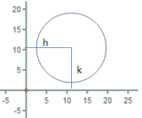

Recall from Basic Equation of a Circle, that when the circle's center is at the origin, the formula is

When the circle center is elsewhere, we need a more general form. We add two new variables h and k that are the coordinates of the circle center point:If you compare the two formulae, you will see that the only difference is that the h and k variables are subtracted from the x and y terms before squaring them:
| Basic | (x)2 + (y)2 = r2 |
| General | (x-h)2 + (y-k)2 = r2 |
When we see the equation of a circle such as we know it is a circle of radius 9 with its center at x = 3, y = –2.
The equation is then a little simpler. Since the center is at the origin, h and k are both zero. So the general form becomes which simplifies down to the basic form of the circle equation: For more on this see Basic Equation of a Circle.
Instead of using the Pythagorean Theorem to solve the right triangle in the circle above, we can also solve it using trigonometry. This produces the so-called parametric form of the circle equation as described in Parametric Equation of a Circle. This parametric form is especially useful in computer algorithms that draw circles and ellipses. It is described in An Algorithm for Drawing Circles.